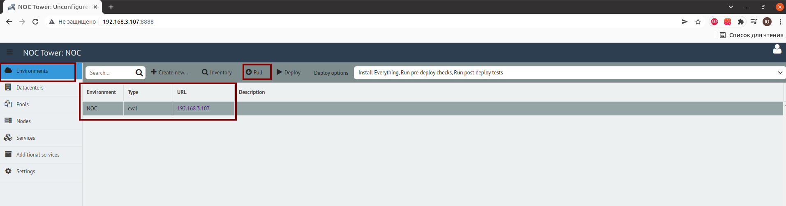
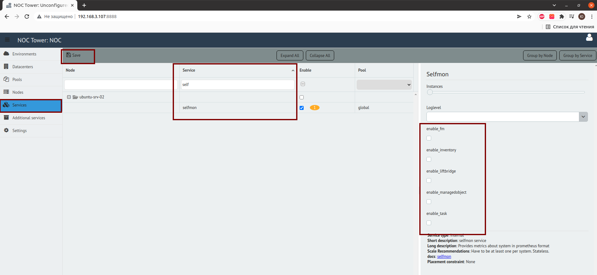
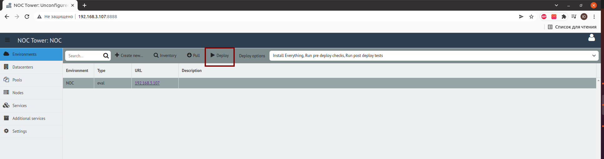

Мониторим NOC¶
Устанавливаем Docker и Docker-compose¶
- Установка Docker https://docs.docker.com/engine/install/
- Установка Docker Compose https://docs.docker.com/compose/install/
Создаём docker-compose.yml со всем его окружением¶
(все команды запускаем от пользователя root) 1. Создаём директорию в которой должен лежать docker-compose.yml
mkdir -p /etc/docker-compose/mon/
version: '3'
services:
grafana:
image: grafana/grafana-oss
restart: always
ports:
- 3000:3000
user: '0'
volumes:
- "./grafana/data/:/var/lib/grafana/"
- "./grafana/grafana-selfmon-dashboards/dashboards/noc/:/var/lib/grafana/dashboards"
- "./grafana/grafana-selfmon-dashboards/provisioning/datasources/:/etc/grafana/provisioning/datasources/"
- "./grafana/grafana-selfmon-dashboards/provisioning/dashboards/:/etc/grafana/provisioning/dashboards/"
networks:
- mon
vmagent:
image: victoriametrics/vmagent
depends_on:
- "vm"
ports:
- 8429:8429
volumes:
- "./vm/vmagentdata:/vmagentdata"
- "./vm/vmagent.yml:/etc/prometheus/prometheus.yml"
command:
- '--promscrape.config.strictParse=false'
- '--promscrape.config=/etc/prometheus/prometheus.yml'
- '--remoteWrite.url=http://vm:8428/api/v1/write'
restart: always
networks:
- mon
vm:
image: victoriametrics/victoria-metrics
ports:
- 8428:8428
volumes:
- "./vm/vmdata/:/storage"
command:
- '--storageDataPath=/storage'
- '--retentionPeriod=60d'
- '--httpListenAddr=:8428'
restart: always
networks:
- mon
alertmanager:
image: prom/alertmanager
restart: always
volumes:
- "./vm/amdata/:/alertmanager"
command:
- --config.file=/alertmanager/alertmanager.yml
- --web.external-url=https://alertmanager:9093
networks:
- mon
prometheus-bot:
image: tienbm90/prometheus-bot:0.0.1
volumes:
- ./telegrambot/config.yaml:/config.yaml
- ./telegrambot/:/etc/telegrambot/
networks:
- mon
restart: always
vmalert:
image: victoriametrics/vmalert
depends_on:
- "vm"
- "alertmanager"
volumes:
- "./vm/noc-prometheus-alerts/:/etc/alerts/"
command:
- '--datasource.url=http://vm:8428/'
- '--remoteRead.url=http://vm:8428/'
- '--remoteWrite.url=http://vm:8428/'
- '--notifier.url=http://alertmanager:9093/'
- '--rule=/etc/alerts/*.rules.yml'
networks:
- mon
restart: always
networks:
mon:
mkdir -p /etc/docker-compose/mon/grafana/data/
git clone https://code.getnoc.com/noc/grafana-selfmon-dashboards.git /etc/docker-compose/mon/grafana/grafana-selfmon-dashboards/
mkdir -p /etc/docker-compose/mon/vm/amdata/
chmod 777 /etc/docker-compose/mon/vm/amdata
mkdir /etc/docker-compose/mon/vm/vmdata/
touch /etc/docker-compose/mon/vm/vmagent.yml
# my global config
global:
# у нас есть алертменеджер живет там то
alerting:
alertmanagers:
- static_configs:
- targets:
- alertmanagers:9093
# важная секция. сбор метрик
scrape_configs:
# самомониторинг прометея
- job_name: 'vmagent'
static_configs:
- targets: ['vmagent:8429']
labels:
env: 'infrastructure'
- job_name : 'victoriametrics'
static_configs:
- targets: ['vm:8428']
# собираем метрики с ноковских демонов. Дискавери из консула
- job_name: 'noc'
consul_sd_configs:
- server: '<ip-адрес сервера с ноком>:8500' # например 192.168.1.25:8500
relabel_configs:
- source_labels: [__meta_consul_tags]
regex: .*,noc,.*
action: keep
- source_labels: [__meta_consul_service]
target_label: job
- source_labels: [env]
target_label: env
replacement: "dev" # указываем тут тип инсталляции нока
# собираем метрики с telegraf. Дискавери из консула
- job_name: 'telegraf'
consul_sd_configs:
- server: '<ip-адрес сервера с ноком>:8500' # например 192.168.1.25:8500
relabel_configs:
- source_labels: [__meta_consul_tags]
regex: .*,telegraf,.*
action: keep
metric_relabel_configs:
- source_labels: [topic]
regex: correlator.dispose.(.+)
target_label: pool
replacement: '$1'
# собираем метрики с кликхауса
- job_name: 'ch'
scrape_interval: 30s
static_configs:
- targets:
- <ip-адрес сервера на котором установлен clickhouse>:8001 # включить отдачу метрик можно в башне, секция `clickhouse`
labels:
env: 'dev' # указываем тут тип инсталляции нока
git clone https://code.getnoc.com/noc/noc-prometheus-alerts.git /etc/docker-compose/mon/vm/noc-prometheus-alerts/
touch /etc/docker-compose/mon/vm/amdata/alertmanager.yml
global:
resolve_timeout: 5m
smtp_from: alertmanager@prometheus.example.com
smtp_smarthost: mx1.example.com:25
smtp_require_tls: false
route:
group_wait: 30s
group_interval: 5m
repeat_interval: 8h
group_by: [env, node]
receiver: 'prometheus-bot'
routes:
- receiver: blackhole
continue: false
match:
alertname: DeadMansSwitch
- receiver: 'prometheus-bot'
group_interval: 5m
receivers:
- name: blackhole
- name: 'prometheus-bot'
webhook_configs:
- url: 'http://prometheus-bot:9087/alert/<id чат телеграмма>'
- name: email
email_configs:
- send_resolved: false
to: XXX@example.com
headers:
From: alertmanager@prometheus.example.com
Subject: '{{ template "email.default.subject" . }}'
To: XXXXXXX@example.com
inhibit_rules:
- source_match:
severity: 'critical'
target_match:
severity: 'warning'
equal: ['alertname', 'instance']
- Создаём директорию telegrambot, а в ней создаём два файла config.yaml и template.tmpl не забывая подставлять свои значения.
mkdir /etc/docker-compose/mon/telegrambottouch /etc/docker-compose/mon/telegrambot/config.yamlconfig.yaml:touch /etc/docker-compose/mon/telegrambot/template.tmpltelegram_token: "<token от бота в telegram>" template_path: "/etc/telegrambot/template.tmpl" time_zone: "Europe/Moscow" split_token: "|" time_outdata: "02/01/2006 15:04:05" split_msg_byte: 10000
template.tmpl:
{{ $length := len .GroupLabels -}} {{ if ne $length 0 }}
<b>Grouped for:</b>
{{ range $key,$val := .GroupLabels -}}
{{$key}} = <code>{{$val}}</code>
{{ end -}}
{{ end -}}
{{if eq .Status "firing"}}
Status: <b>{{.Status | str_UpperCase}} 🔥</b>
{{end -}}
{{if eq .Status "resolved"}}
Status: <b>{{.Status | str_UpperCase}} ✅</b>
{{end }}
<b>Active Alert List:</b>
{{- range $val := .Alerts }}
Alert: {{ $val.Labels.alertname }}
{{if HasKey $val.Annotations "message" -}}
Message:{{ $val.Annotations.message }}
{{end -}}
{{if HasKey $val.Annotations "summary" -}}
Summary:{{ $val.Annotations.summary }}
{{end -}}
{{if HasKey $val.Annotations "description" -}}
Description:{{ $val.Annotations.description }}
{{end -}}
{{if HasKey $val.Labels "name" -}}
Name:{{ $val.Labels.name }}
{{end -}}
{{if HasKey $val.Labels "partititon" -}}
Partition:{{ $val.Labels.partition}}
{{end -}}
{{if HasKey $val.Labels "group" -}}
Group:{{ $val.Labels.group }}
{{end -}}
{{if HasKey $val.Labels "instance" -}}
Instance:{{ $val.Labels.instance }}
{{end -}}
{{if HasKey $val.Labels "queue" -}}
Queue:{{ $val.Labels.queue }}
{{end -}}
{{if HasKey $val.Labels "pool" -}}
Pool:{{ $val.Labels.pool }}
{{end -}}
{{if HasKey $val.Annotations "value" -}}
Value:{{ $val.Annotations.value }}
{{end -}}
Active from: {{ $val.StartsAt | str_FormatDate }}
{{ range $key, $value := $val.Annotations -}}
{{- end -}}
{{- end -}}
Настраиваем selfmon¶
- Заходим в веб-интерфейс NOC Tower
:8888 - Выбираем в Environment и нажимаем Pull

- Далее переходим в Services, выбираем selfmon, отмечаем флажками что хотим мониторить

- Деплоим изменения

Ребутаем сервисы NOC¶
- Переходим в директорию где установлен noc (/opt/noc)
- Выполняем команду:
./noc ctl restart all
Запускаем мониторинг¶
- Переходим в директорию где лежит docker-compose.yml
2.Запускаем мониторинг
cd /etc/docker-compose/mon/docker-compose up -d